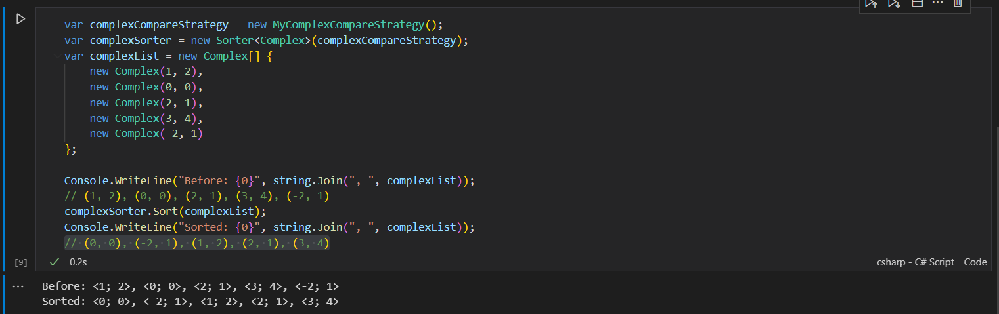

設計模式筆記—Strategy Pattern
Strategy Pattern 與 Template Method Pattern 的相似，都是跟流程相關的模式
但有一些不一樣的地方
正如 Strategy Pattern 這個名子，這個模式著重在策略的部份
策略也是一種抽象的概念，可以說是達成某個目的過程中可能會用到方法
根據不同的場合使用不同的策略，靈活度高
Strategy Pattern 通常會透過一個介面來表示策略的抽象概念
接著只要把這個策略帶入任何需要使用的流程內即可
接下來會用常見的 Sorter 來做範例：
// 這邊簡單用個 selection sort :) |
在上面的程式中，一個叫 Sort 泛型類別會接受一個 CompareStrategy 的泛型介面
之後就可以用這個 Sorter 對元素進行 in-place 排序
有關 CompareStrategy 的定義如下：
public interface CompareStrategy<T> { |
這個 CompareStrategy 就是一個策略，用於比較兩個數值的大小
現在要做一個複數的排序，直接用 .NET 內建的 Complex 來表示複數
先以複數的大小來排序，然後再依照實數、虛數的數值個別排序：
public class MyComplexCompareStrategy : CompareStrategy<Complex> { |
然後建立一個複數的比較並進行排序：
var complexCompareStrategy = new MyComplexCompareStrategy(); |
結果如下：

可以再更簡單一些
看過了上面的範例，應該可以感受到這個模式的威力
搭配泛型使用，整個類別變得很有彈性，適合不同的場合使用
原始的 Strategy Pattern 就是這種有介面與實做類別的形式，寫起來 Class 的數量很容易爆增
但由於現在的 OO 語言多少都會融合一點 FP 的概念
Lambda 的導入可以說避免產生太多的 Class
我們可以直接把上面的程式化簡化這樣：
public class SortAlgorithm { |
執行的程式可以簡化成：
var comparer = (Complex item1, Complex item2) => { |
除了策略本身透過可以 lambda 簡化並直接存到變數以外
流程本身也可以只是一個方法，然後接受一個函數來使用
這其實就跟在 C 裡面用函式指標是同一個意思
我會把這邊的 compare 函數變數作為是一種策略
做到這邊，最後就會發現，.NET 的 Array.Sort 跟範例很像：
public delegate int Comparison<in T>(T x, T y); |
思考模式的概念
從最開始有提過，Strategy Pattern 著重在策略的部份
策略就是這個模式的核心
將外部提供的策略注入到某個類別中使用
概念上就好比一個產品從生產到進入市場的流程
市場調查、研發、生產、最後打入市場
打入市場勢必需要某種策略，針對不同的客群使用不同的方式讓客戶對產品產生興趣
因為只關注策略而非流程，因此策略本身可以在各種流程中使用，提高了靈活度
與 Template Method Pattern 之間該如何做選擇
Template Method Pattern 與 Strategy Pattern 可以做同樣的事情，在靈活度跟關聯程度上也所差異
我覺得要從問題本身來思考：
現在要解決的問題是需要一套共通的作法，還是依場合套用不同策略？
了解問題的需求，可以從兩個模式中做選擇了
例如說排序，通常都會是使用者自己按需求排序
它需要使用者選擇一個比較策略，所以就會使用 Strategy Pattern
但如果在我的應用程式中，排序跟它所屬的環境有關
換句話說，它跟環境之間有比較強烈的關聯性，其他人不會隨意去更動比較規則
那使用 Template Method Pattern 就會很適合
後記
最近太懶了，一直沒有更新設計模式
雖然我也沒辦法寫太快，畢竟我需要一些例子來說明模式
有些模式實在是不太常見，我自己也很難想像什麼時候會用到
可能是因為我經驗還不夠，還沒見過各種優秀 (或慘絕人寰?) 的程式
在 **無暇的程式碼—敏捷完整篇 **書中，Strategy Pattern 跟 Template Method Pattern 是一起講的
書中的作者因為 Template Method Pattern 比較簡單而選擇使用該模式
但我自己的想法是，要去思考問題背後的抽象概念，根據關注的東西來選擇模式的使用
不過問題的概念可能隨著需求而有所改變，最後還是有機會轉去另一個模式
目前我對於設計模式的理解都來自 無暇的程式碼—敏捷完整篇 這本書
但實際上我並沒有特別去看過原本的設計模式書籍，頂多上網看一點文章而已，並不了解模式的背景故事
如果有什麼錯誤的地方，或是覺得解釋不好的，還請多多包含 <(_ _)>